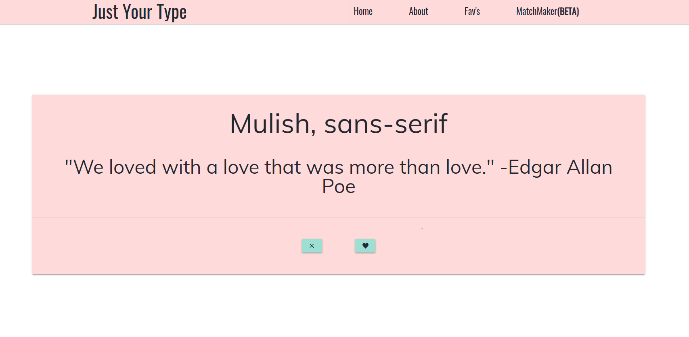
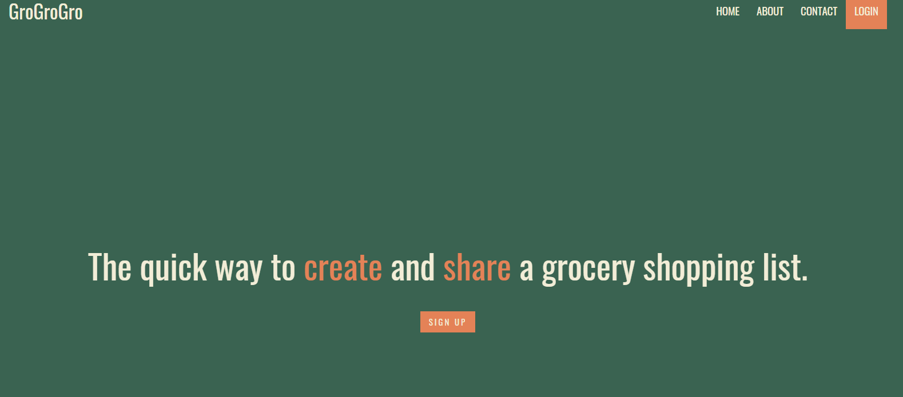

We have gamified the task of finding new fonts. Just Your Type combines the user interface of a dating application and with the excitement of new typography. Our web application uses Google Fonts API and applies the styling to a random quote generator via Quote Garden. With Just Your Type, users can see how a font is utilized with different characters, while also enjoying some wisdom of love.
 Live Demo ProcessFrom the brilliant minds of Half&Half comes a web applications that ease the pain of remembering family household list. GroGroGro create a grocecy list the entire family have access too. Members of the family can read,add, and update the family list while the administator can delete items.
 Live Demo Process